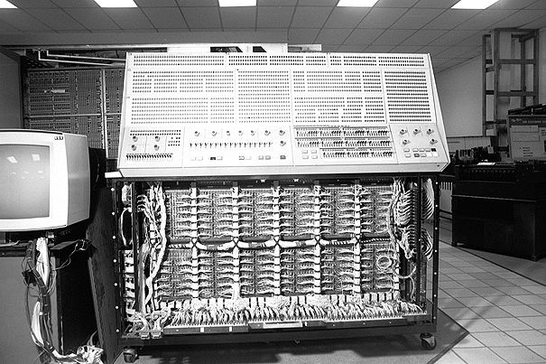
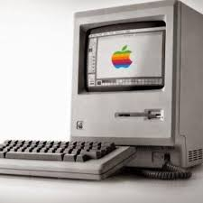
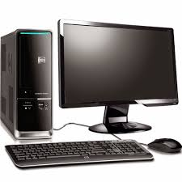
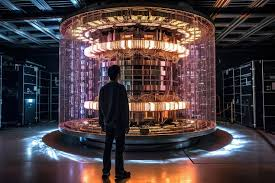

Evolución de las Computadoras
La evolución de las computadoras ha sido impresionante, desde las primeras máquinas hasta la tecnología moderna.
| Generación | Descripción | Imagen |
|---|---|---|
| Primera Generación (1940-1956) | Utilizaba tubos de vacío, eran enormes y consumían mucha energía. | |
| Segunda Generación (1956-1963) | Usaban transistores, lo que las hacía más pequeñas y eficientes. |  |
| Tercera Generación (1964-1971) | Los circuitos integrados permitieron computadoras aún más pequeñas y potentes. |  |
| Cuarta Generación (1971-1980) | Uso de microprocesadores, lo que permitió computadoras personales. |  |
| Quinta Generación (1980-presente) | IA y sistemas distribuidos, computadoras ultrarrápidas. |  |
| Sexta Generación (2000-presente) | Computadoras con inteligencia artificial avanzada y procesamiento paralelo. | |
| Séptima Generación (futuro) | Computadoras cuánticas y tecnologías emergentes que pueden revolucionar la computación. |  |